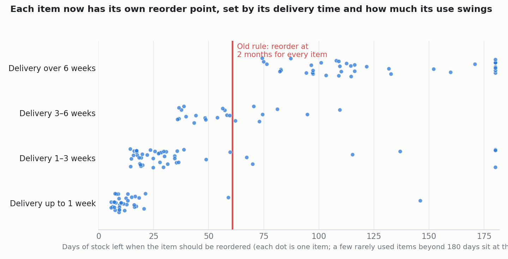
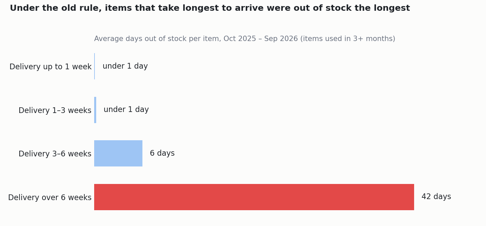

When to reorder lab supplies, item by item
An Excel workbook that gives every supply in a lab’s central store its own reorder level, from its real usage and real delivery times, and tells store staff whether to order now and how much.
This page uses synthetic data: 150 invented supplies and 24,548 stock movements for a fictional lab network. The real version was built on five quarters of a real central store’s records, which can’t be published.
The problem
The central store reordered everything the same way: when two months of stock were left, order two more months. My first tracker, in 2025, applied that rule to every item, and it got orders going out before items ran out instead of after.
But the rule treated gloves that arrive in five days the same as imported reagents that take two months. The store held far too much of some items and kept running out of others, and nobody could see which was which, because the rule gave every item the same answer.
What I did
- Pulled five quarters of stock movements and purchase orders, and checked them first: every quarter’s opening stock plus its movements had to equal its closing stock.
- Measured each item’s real usage, how much that usage swings from month to month, and how long its deliveries actually take, from its own purchase orders.
- Worked out a reorder level for each item: the stock it uses while waiting for a delivery, plus a safety cushion sized to how unpredictable its use is.
- Built it as a plain Excel workbook with a START HERE sheet. Staff type a stock count, and one column says order now, OK, overstocked or do not reorder, with the quantity to order.
- Added a note wherever a number needs judgement, such as items used only once or twice a year, new items, and items that were out of stock for long periods.
What I found
One rule didn’t fit any item

The old rule reorders when about 61 days of stock are left, for everything. Worked out item by item, the right point runs from about 6 days for supplies delivered within the week to more than 100 days for imported reagents.
Quick-to-arrive supplies were overstocked
For the 35 items that arrive within a week, the new reorder levels are about 83% lower. Medium nitrile gloves are used at about 464 boxes a month and arrive in 5 days: the old rule placed an order at 928 boxes, the new level is 137. At the last stock count, 61 of the 150 items were above their new maximum.
Slow-to-arrive supplies ran out

94% of the items that take more than six weeks to arrive ran out at least once in the year, for 42 days on average. For all 38 of them, the new reorder level is higher, about 1.8 times the old one.
The data was checked before it was trusted
Seven items didn’t link up between September and October 2025, because one report was run before the day’s last movements were posted. That is 0.5% of the quarter’s issues. The workbook lists the seven items and explains why the reorder levels aren’t affected.
What it means
The store keeps the same simple habit, count the stock and read one column, but each item now has a level that fits it: less stock sitting on the shelves for fast supplies, and earlier orders for the imported reagents that kept running out. The next improvement is to allow for suppliers who are sometimes late, not just usage that swings.
For technical readers
Excel: INDEX/MATCH, SUMIFS, STDEV, NORMSINV and MEDIAN(IF) array formulas, conditional formatting, data validation. Python (pandas, SciPy) for the synthetic data and an independent check of every figure.